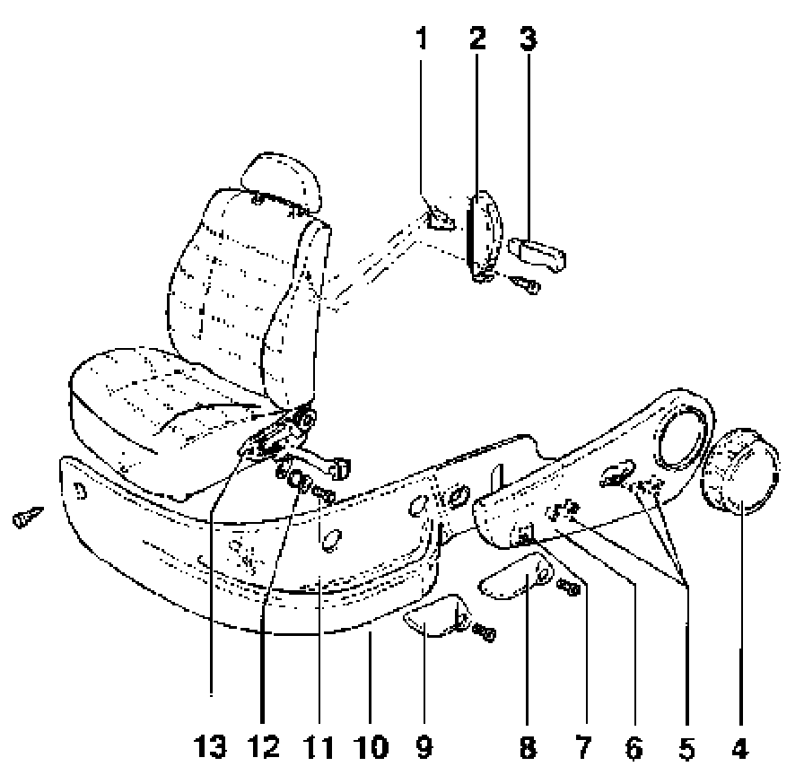

Seat Back: Service and Repair
Front seat backrest, removing and installing

1 - Securing clip
2 - Trim
3 - Release lever
4 - Control knob
- Height adjustment only
5 - Expander pin
6 - Cover
7 - Retainer
8 - Control handle
- Height adjustment only
9 - Control handle
- Comfort seat only
10 - Trim panel
- Height adjustment only
11 - Phillips- head screw
12 - Bushing
13 - Mounting pin
Removing
- Remove front seat.
- Press off control knob -4-.
- Drive out expander pins -5- (left and right) toward inside.
- Front expander pin will be pressed against seat frame.
- Press expander pin downward from above using screwdriver.
- Remove cover -6- from backrest frame.
- Remove Phillips-head screw -11-.
- Pull off retainers -7- (left and right).
- Pull backrest frame off mounting pin -13-.
Installing
- Check bushings -12- (left and right) for damage; replace if necessary.
- Replace Phillips-head screw -11- (with thread locking compound).
- Remove adhesive residue from nut threads with tap or thread chaser.
- Coat threads of new screw with locking compound AMV 197 000 01.